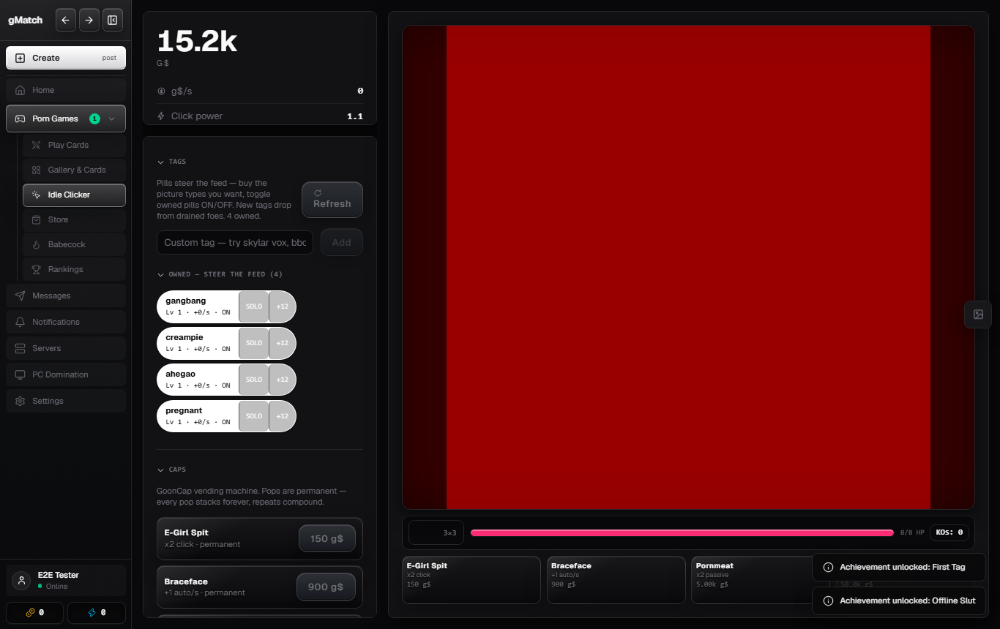
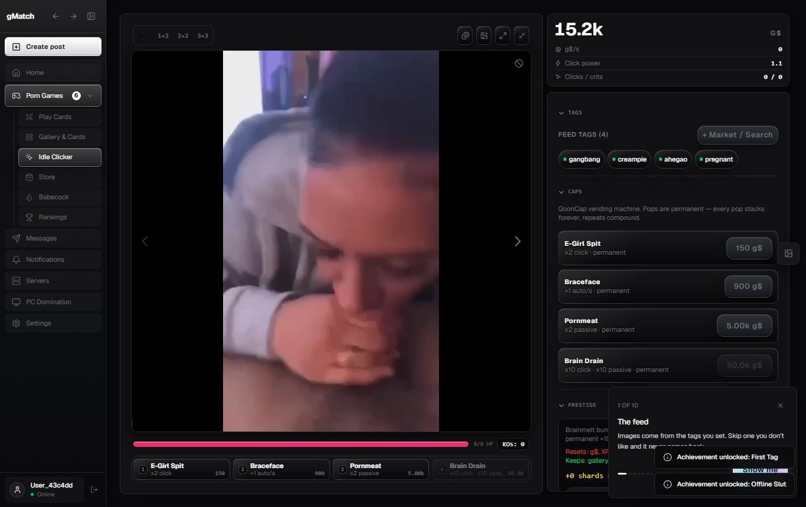
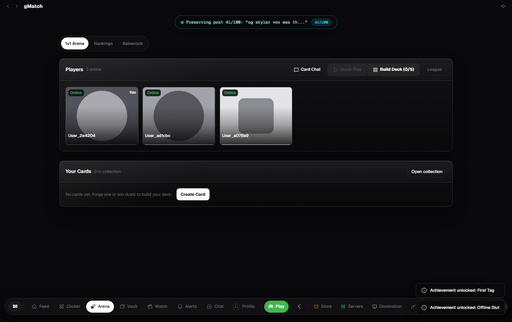
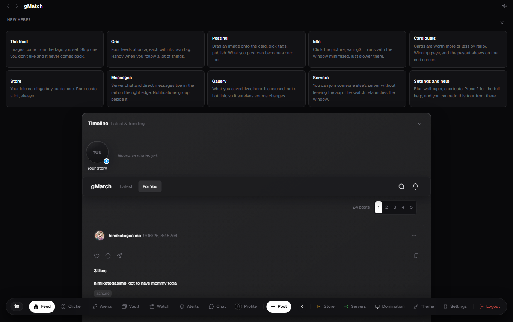
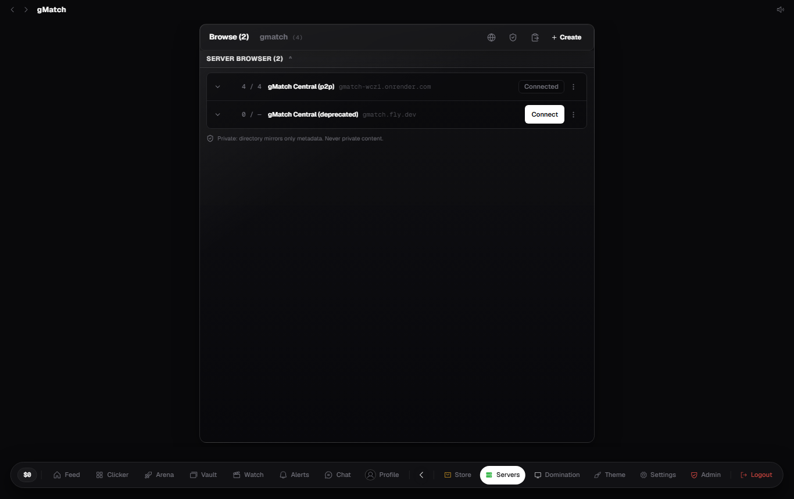

gMatch
Adult content: 18+ only. By downloading and using gMatch you declare you are a consenting adult in your jurisdiction.
Built by two people who got annoyed that every "adult" platform keeps a copy of your most private moments on someone's server. gMatch has no ads, no data sales, no sign-up. The server you'll talk to is, by design, almost blind.
Download (Windows x64, single file)
Version 1.4.0 · file gMatch-1.4.0-portable.exe · 109,925,447 bytes (104.8 MiB) · built 2026-09-19T00:55:36.371Z (UTC).
Expected SHA-256. Copy the value below and check it against the next section before running anything:
591c3ba8cbb1454ba84c8196ed831e3d6c7883ebb32fbfe7133d199b966b743e
Expected SHA-512, for extra paranoia (the file is 109 MB):
7f9c8cb0c984396bcae781a80a47f7a39e764988e12886042e75ecb885eeb48603c23d4f37d9dbf79a3a465e05de5198bbc28b7643c94148e45e1cd32b3bbd5f
(Both hashes, plus the build date and byte count above, are derived mechanically from the shipped file at publish time, never hand-typed. The same data lives at release.json on this server.)
Code signing: what we do and don't have
This binary is not Authenticode-signed. A commercial code-signing certificate costs hundreds of dollars a year, and we fund this project with donations rather than data sales. So instead we publish the cryptographic integrity you can verify yourself: SHA-256 and SHA-512 digests derived from the exact bytes served on this page. There is no macOS or Linux build yet.
"Windows said it might be dangerous". Why, and what to do
The SmartScreen warning appears for ANY legitimate unsigned program. It is a missing-receipt indicator, not a virus detector. To trust this file independently:
- Verify the SHA-256 (next section). That proves the downloaded file is byte-for-byte what we published;
- Paste the hash (or upload the file) at VirusTotal for a public scan by ~70 antivirus engines;
- Report anything that doesn't match through the app (Settings → Help) or the abuse contact below.
Verify the hash on Windows (20 seconds, nothing to install)
Open the Start menu, type PowerShell, and run (adjust the path if you saved elsewhere):
Get-FileHash "$env:USERPROFILE\Downloads\gMatch-1.4.0-portable.exe" -Algorithm SHA256
Compare the Hash value with the one published above. If it differs by even ONE character, do NOT run the file: delete it and report it through the abuse page linked under Terms below.
Same idea, any algorithm you prefer: Get-FileHash ... -Algorithm SHA512 must match the SHA-512 block above.
Staying current (updates)
From version 1.1.4, gMatch checks this server's release.json shortly after each start and once a day after that. When a newer build exists it downloads it automatically, verifies it against the SHA-256 published for that file, and a single Install & Restart button in Settings swaps the .exe you already run and relaunches it. Same file, same folder, no installer, nothing else changes. If antivirus or SmartScreen refuses the swap, the app keeps running the old build and the exact downloaded file is left next to it; every step is written to %APPDATA%\gMatch\main.log. Builds 1.1.3 and older cannot self-update: download the new file once and it inherits everything.
What this application is
gMatch is a Windows program. One .exe, no installer. It works as an adult social network plus a card-game arcade, and inside it you get:
- A feed of photos/videos that you publish, and you pick who sees each post;
- Private chat and group rooms, end-to-end encrypted, addressed only through rotating masks (see Masks & metadata);
- An adult idle-clicker and a 1v1 card game with decks, a store and a player-to-player market;
- Denunciation-based moderation: if someone sends you something offensive, you report it and only then reveal that one message to a moderator. The admin suite implements exactly that. Cases open by reports, never by browsing anyone's private messages.
There is no sign-up, no e-mail, no phone. Your "account" is a pair of cryptographic keys generated on your own computer. Nobody can reset your password because there is no password to reset. That's on purpose, and the app makes you back your key up to a file so you can restore it later.
What it looks like
Real screenshots from the current build. One honest note first: the image tiles inside the feed and arena are synthetic 1×1 placeholders our automated tests use, not adult content. This is a public page, and we keep our moderation promises here too. On your machine the feed shows what your own tags pull, and it stays between you and whoever you share it with.

The Idle Clicker arena. Sidebar on the left, stage in the middle, your wallet and upgrades on the right. Everything you see runs locally.

The Games hub. Every mode reachable from the nested sidebar: Play Cards, Gallery & Cards, Idle Clicker, Store, Babecock, Rankings.

The 1v1 card arena. Queue up, spectate, and trade cards on the player market.

The social feed. Posts, stories, likes. The envelopes that cross the internet are encrypted, and the server relays them without opening them.

The server browser. Join a friend's node, browse the public directory, or host your own. You are never forced onto our infrastructure.
Security: what the server can and cannot see
The server behind this page runs only the download and a minimal "blind courier". By design, and audited (report linked below):
- All content (messages, photos, captions, rooms) travels encrypted. The server forwards opaque envelopes addressed to tokens. It does not know who sends, to whom, or what is inside.
- The server keeps no list of who is online. Connections are anonymous; presence exists only between you and your contacts.
- Every API call, reads included, seals its identity headers to the node's transport key. Anyone watching your network sees ciphertext, not who you are or which route you hit.
- Feed images are cached to your disk, not held in RAM. Each file is encrypted with AES-256-GCM using a local key that never leaves your machine, and evicted on an LRU basis when the byte cap fills up. Server responses are still marked
no-store. - Your private keys sit inside Windows' own crypto vault (DPAPI). Never in plaintext, never on any server.
- IP addresses are never stored, echoed, logged or rendered by the application layer; the optional TURN relay hands out random short-lived credentials unlinked to your identity. See honest limits for what that does not cover.
- You can skip our server entirely: gMatch can host its own node (your machine holds all data) or join a friend's. The public directory lists only server names and descriptions; content and user lists never touch it. Password-protected nodes verify the password on the host's machine (scrypt, lockout on failed attempts), never centrally.
Read the full report: security audit, four rounds, every finding cites code.
Cryptography and how it works (no mystery)
- Identity: on first start the app generates two keypairs, Ed25519 (signs everything you do) and X25519 (encrypts content). Your "ID" is a SHA-256 digest of the public key. The private key never leaves your device.
- 1:1 messages: ECIES (X25519 + BLAKE3 + XChaCha20-Poly1305). Mathematically, only the holder of your private key can open what was sent to you. Not the server, not even the sender afterwards.
- Group rooms: a shared secret (DEK) circulates encrypted member-to-member. When someone leaves, the secret rotates (epoch), so the past stays readable to members and nothing new opens with the old key.
- Request sealing: every API call is signed and timestamped (replays rejected), and both mutations and reads travel ECIES-encrypted to the node's transport key. Someone watching your network sees ciphertext, not which post you liked or whom you followed.
- P2P privacy: ICE candidates containing literal IPs are dropped before they ever leave the app. With TURN configured the connection is forced relay-only, and relay labels are randomised per session.
- The honest limit: cryptography protects content from third parties. It does NOT protect against someone grabbing your unlocked computer or your exported key file. Keep the backup somewhere safe, and lock your screen.
Masks, handles and metadata
gMatch borrows the Session/SimpleX idea: nobody talks to "you". They talk to a mask.
- Peer addressing is mask-only. Every conversation, receipt and room invite is addressed to an opaque delivery token rendered as
handle.gmatch.com/<token>. Hosts, IPs and account ids never appear in the peer layer. - Tokens rotate. Your permanent address is
blake3(pubkey). Each app session also derives a freshblake3(pubkey‖epoch)box, and the epoch travels to your contacts sealed inside the encrypted message bodies themselves. The courier therefore cannot link yesterday's traffic to today's for the same key. Old boxes stay readable for one boot as a fallback, so nothing is lost mid-rotation. - Images carry pixels only. Every image entering the app is stripped of all metadata containers (EXIF/GPS, XMP, ICC profiles, text chunks, comments) across JPEG, PNG, GIF and WebP, on every path: upload, avatar, external-URL proxy. Post tags live in the database, never in the file. What leaves the app is the stripped copy. Video containers are the documented exception, see limits.
- Addresses never render raw. Server coordinates shown anywhere in the UI are masked (
203.0.•••.•••). The real value is only ever used to connect, never displayed.
Server topology: courier, nodes, and life without the hub
- Default (courier mode): the packaged app talks to
gmatch.fly.dev, which runs only a blind courier (encrypted mail + TURN relay) and the download. It writes no content tables, verified by an automated "site blindness" test, and does not know who connects. - Host mode (opt-in): every copy bundles a complete server, no install needed. Turn it on in Settings → Server and your machine becomes the node: friends join by address, and the host administers their world. What a host can see is stated plainly in the encryption disclaimer.
- Nodes without the hub: the server directory gossips. Whichever node you join hands you its list of other nodes, cached locally. A node can also be joined directly from a shareable
gmatch://node/…code the host gives you out-of-band. If the central node disappears tomorrow, the mesh of community nodes keeps working. - Updates come from this server's
release.jsonand are hash-verified before install (see Staying current).
The admin model (why moderation can't read your mail)
- Report-driven only. The admin suite has no bulk view of private messages. A moderator sees a reported item only when the victim chooses to disclose it: the app hands over the message key for exactly that envelope, and the server verifies the disclosure opens nothing else.
- Unlocking the panel requires the passcode and, on the official node, the allowlisted admin identity. The grant expires after 12 hours and every moderation action is written to an append-only audit log.
- On a community node the host is the admin of their own world. The software disciplines what the panel exposes, and the disclaimer is honest that a host with raw database access is trusted, not policed.
Honest limits (what we did NOT solve)
- TCP-layer IP: the network edge (this server's host, and any CDN in front of it) still sees client IPs. No application code can change that. What the code guarantees is that the application layer never stores, echoes, logs or renders an IP. The official node is being moved behind a front proxy as an ops step.
- Traffic analysis: without onion routing, a powerful observer can still correlate timing and volume of courier traffic. Envelope padding and jitter reduce it; they do not eliminate it.
- Video metadata (mp4/webm) is not stripped. That is a parser limitation, documented in the audit.
- No forward secrecy yet: keys are static per account. Ratcheting is planned hardening.
- The audit is static: four white-box rounds with reproducible checks, not a third-party dynamic pentest.
- Malware on your own machine and physical access defeat any client-side crypto. Lock your screen; keep the key backup safe.
Terms of Service & Privacy (all documents)
- Terms of Service: eligibility (18+), self-custodied keys, prohibited conduct, content responsibility, termination.
- Privacy Policy (LGPD): exactly which data exists, legal bases, your rights (art. 18) and how to exercise them.
- Community rules: what the app blocks technically, not just rhetorically.
- Abuse & reports: how reporting works and how optional key-disclosure for moderation works.
- Adult content records: who the publisher of your media is (you) and what that means.
- Encryption & self-custody disclaimer: the limits of what we can do for you (short: very little, by design).
- Security audit: the full four-round white-box report.
Current document version: 2026-09-11.2. Changes are recorded in legal/changelog.html. Inside the app (Settings → Legal), logged-in users read and confirm acceptance of the current version.
Privacy at a glance
- This page: zero JavaScript, zero external fonts, zero cookies, zero analytics, and no requests to anyone but this server. The styling is a single inline block in this file; nothing loads from outside. The screenshots are plain PNG files served from this same page's directory, no CDNs.
- The app: no personal data is collected because there is nothing to collect. No sign-up. What crosses the internet is only encrypted envelopes with an expiry (max 7 days on the official server).
- On your computer: keys and history are encrypted by Windows (DPAPI); feed images are encrypted at rest with AES-256-GCM under your local storage key, so other users on the same machine cannot read the cache. RAM stays under 200–300 MB.
- Your LGPD/GDPR rights (access, deletion, portability) are exercised locally in the app. You export your identity, and you delete it. Full explanation at legal/privacy.html.
Questions you would ask
Why an .exe instead of a website?
So adult content never passes through, or sits on, a third-party web host. The app runs on your machine and only ever sends encrypted envelopes. A normal website cannot hide from its host what it displays.
Can I recover my account if I lose my key?
No, and that is on purpose: nobody, not even us, can get into your account. That is exactly why the app insists you export a key backup.
Any telemetry, ads, sign-up?
No. Zero analytics, zero cookies on this page, zero registration.
What does the server actually store?
In courier mode: encrypted envelopes with an expiry (up to 7 days until the recipient fetches them) and delivery tokens that are mathematical digests of the recipient's public key, rotating per session. Nothing that points to a person.
Why are the screenshots placeholder-tiled?
Because this is a public page for an adult app, and we moderate our own product boundaries too. The UI chrome, panels, balances and flows in the pictures are 100% real. The test imagery is intentionally blank.
Does the server see my IP?
The network edge sees it like any website visit does. The application never stores, logs or shows it, and your conversations address each other through rotating masks, not addresses. Full answer in honest limits.
How do I report abuse or a mismatched download?
Through the app (Settings → Help) or the abuse page. It explains what to include and how fast it gets handled.